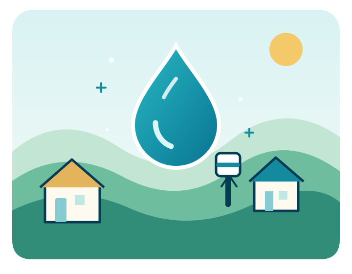
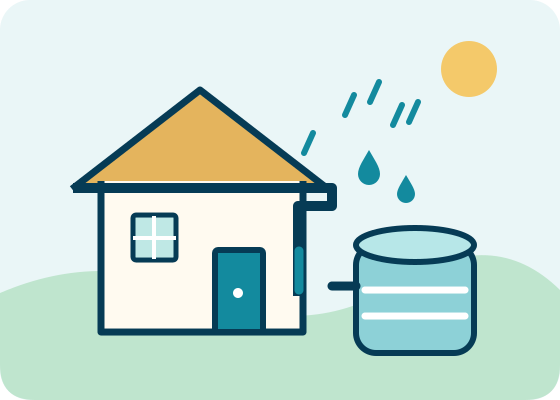

Mais saúde
Água de qualidade e hábitos de higiene ajudam a prevenir doenças relacionadas à água contaminada.
Água limpa transforma vidas
A Água Pura acredita que toda comunidade merece acesso à água potável, saneamento e conhecimento para cuidar desse recurso essencial.
Projeto acadêmico demonstrativo de uma ONG fictícia.

Por que existimos?
Sem água segura e saneamento, a saúde, a educação e o desenvolvimento comunitário ficam comprometidos.
Água de qualidade e hábitos de higiene ajudam a prevenir doenças relacionadas à água contaminada.
O acesso próximo à água pode liberar tempo para estudar, trabalhar e cuidar da família.
Conhecimento e soluções sustentáveis fortalecem a autonomia e o desenvolvimento local.
A mudança começa em conjunto
Conheça iniciativas de captação de água da chuva, tecnologias acessíveis de filtragem e educação ambiental.
Ver iniciativas
Faça parte
Você pode ajudar a levar informação e incentivar o cuidado com a água em sua comunidade.
Veja algumas maneiras de apoiar a causa.
Juntos pela água